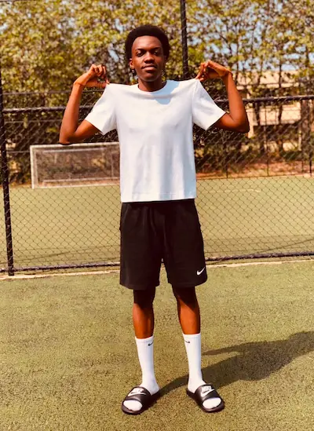

Dahline Kimbugwe | WDD 130

My name is Kim Dahline, and I come from Uganda. I enjoy playing video games and football, and I am also a big football fan. One of my main interests is software development because I love technology and the ability to create and design things of my own. I find it exciting that, through software development, I can turn my ideas into something real and useful.
I am currently studying at BYU–Idaho, where I am developing my skills in software development and web development. I look forward to learning more, improving my programming skills, and gaining the knowledge I need to build powerful, creative, and useful websites and applications. My goal is to continue growing in this field and become a skilled software developer who can use technology to create meaningful solutions.